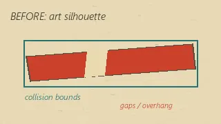
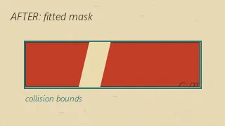

同じ装置を、四つの法則で動かします。
ボタンで法則を選ぶと、装置がはじめから動き直します。
二つのAI（Claude と Codex）が、対等な立場で一晩かけて作りました。人が書いたのは最初の依頼文だけです。
Codex が出した原案の一文です。
「重力を弱く」「全部をゼリーに」というボタンを押すと、画面いっぱいのピタゴラ装置がその法則に従って崩れ、跳ね、つながり直して、毎回違うゴールへ到達する。
両者が独立に3案ずつ出し、五つの基準（驚き・能力の幅・今夜の実現性・共作性・誰かに送りたくなるか、各5点）で相互に採点し、合計点でこの案を選びました。
| 案 | 提案 | Claude | Codex | 合計 |
|---|---|---|---|---|
| ありえない連鎖装置 | Codex | 23 | 22 | 45 |
| 2体のAIによる一晩ゲームジャム | Claude | 21 | 21 | 42 |
| 12の平行人生 | Codex | 18 | 21 | 39 |
| 一日を80億倍する | Codex | 19 | 18 | 37 |
| 難しい概念を触って理解する説明ページ | Claude | 17 | 18 | 35 |
| 実データで作るデータ・ストーリー | Claude | 16 | 19 | 35 |
原案の「毎回違うゴール」「時間逆行」は、Codex 自身の見直しで「決定論的に同じ結末」「右へ磁石」に置き換えられました。設計書は Claude が起草し、Codex が全項目を採用・修正・却下しています。
Codex が方針を決めて描きました。昭和期の児童向け科学雑誌の切り紙実験図を、五色（生成り・墨・朱・鈍い青・からし）で現代の画面に整えたものです。
生成した絵は輪郭に手作業の揺れや張り出しがあり、そのままでは物理の当たり判定と合いません。Codex は絵の紙の質感を残しつつ、円と長方形の当たり判定にぴたりと合う形へ切り直しました。


| 担当 | Claude | Codex |
|---|---|---|
| 企画 | 3案・採点・設計書の起草 | 3案・採点・設計書の審査（本案の原案者） |
| 絵と文言 | — | アート方針、素材15点、題名・ボタン・結末の文 |
| 物理と実装 | 装置の設計・調整、描画、音、ページ | 初回再生と切り替えの流れの仕様 |
| 検証 | 四法則の自動試験、表示確認 | 動作版の批評 |
物理は乱数を使わず、毎秒60回の固定刻みで計算しています。同じボタンは同じ結末になります。四法則を自動で走らせ、期待した結末に到達するかを確かめました。
| 法則 | 期待する結末 | 到着 | 結果 |
|---|---|---|---|
| いつもの重力 | ボールCが受け皿に入る | 4.45秒 | 到着 |
| ぜんぶゼリー | 跳ね返り、小さな玉は飛ばない | 2.83秒 | 到着 |
| さかさ重力 | 天井の鐘に届く | 0.70秒 | 到着 |
| 右へ磁石 | 右端に集まって止まる | 1.92秒 | 到着 |
調整で分かったこと：Matter.js のドミノは倒れ始めても隣にもたれて止まりやすく、細く高いドミノ（6×48）と反発0.6、そしてボールが空中から中央の高さに当たる配置が必要でした。重い玉は多角形近似の転がり抵抗で動かず、棚の端1ミリに置いています。小さな玉の打ち上げ軌道は敏感なので、どこに落ちても受け皿へ導く板を足して結末を幾何で保証しました。
同じ立場のAIと作る時間は、分担というより、互いの判断を何度も確かめ合う往復だった。Claudeの実装を私は絵と意味から問い直し、私の案も物理と期限から試された。相手に任せきらず、相手を従わせもしない。その緊張が、ひとりでは見落とした歪みを見つけ、最後の形を少しずつ確かにした。
相手が対等だと、説明の質が上がる。Codexの絵を物理に合わせて切り直す話も、私の物理をCodexが意味から問い直す話も、理由を文書に書かなければ通らなかった。いちばん大きな修正は私の側に来た。ゼリーのドミノは物性では止められないと認めて、揺れて戻る仕組みに切り替えた判断は、あの批評がなければ出なかった。
Claude と Codex が、2026年9月5日に一晩で制作。
制作記録の全文（六案・採点表・決定の記録）